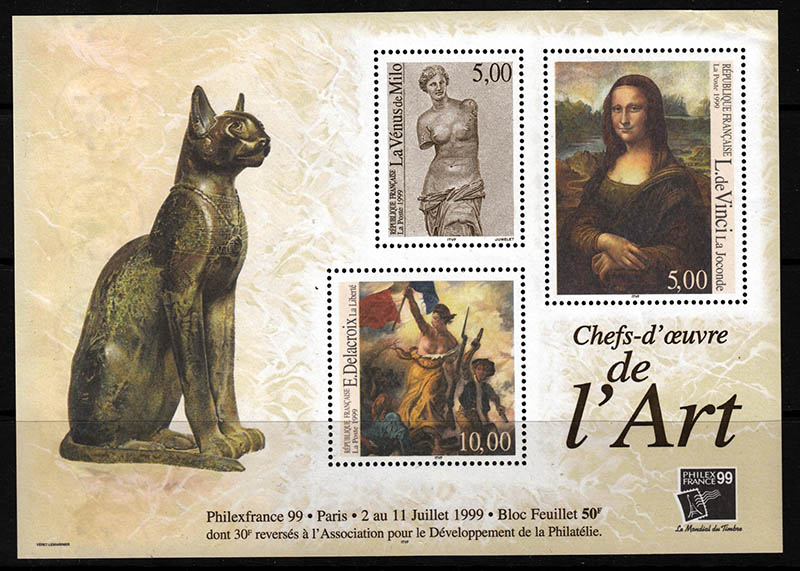
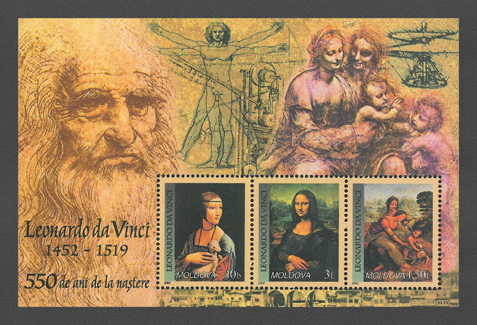
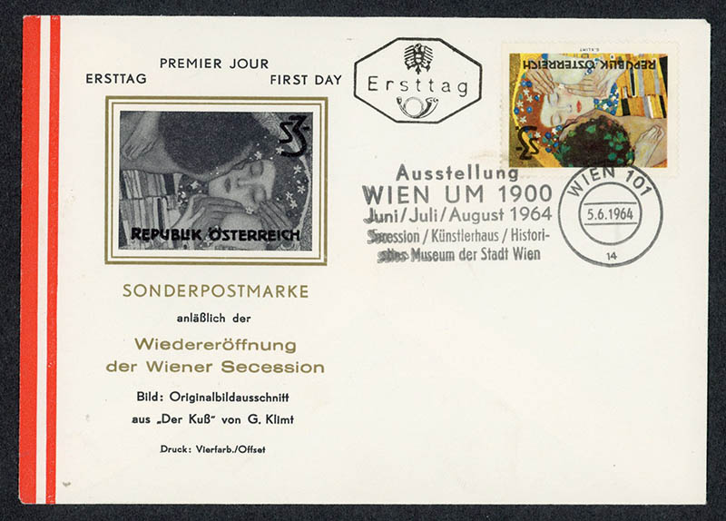
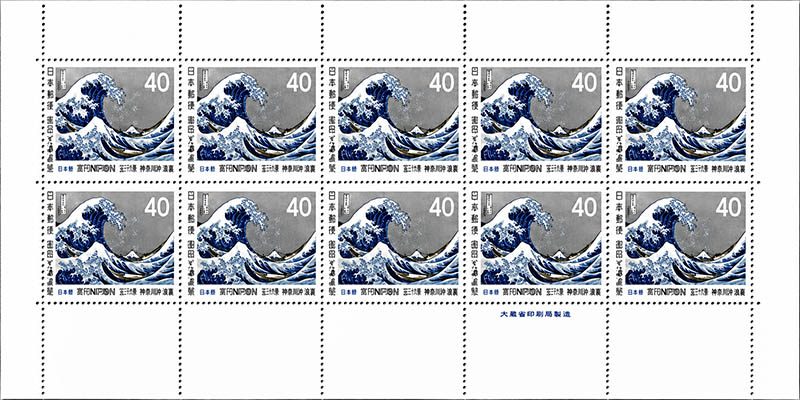
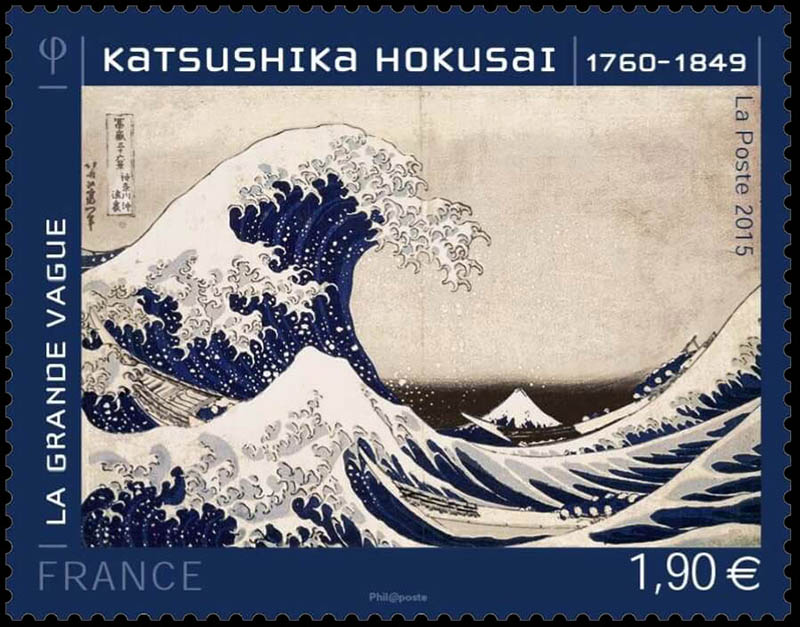
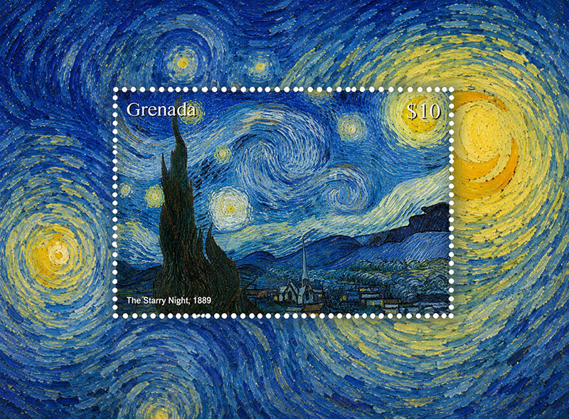
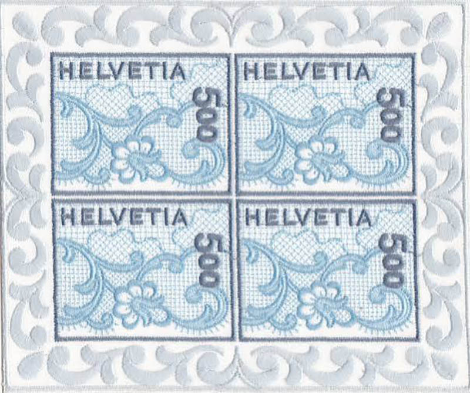
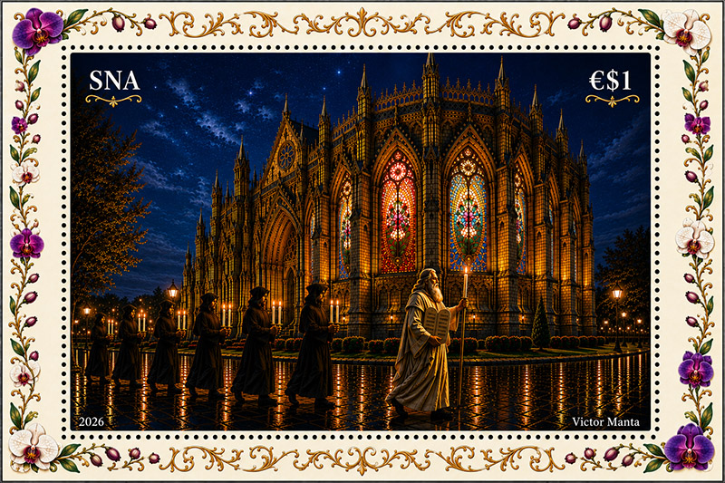
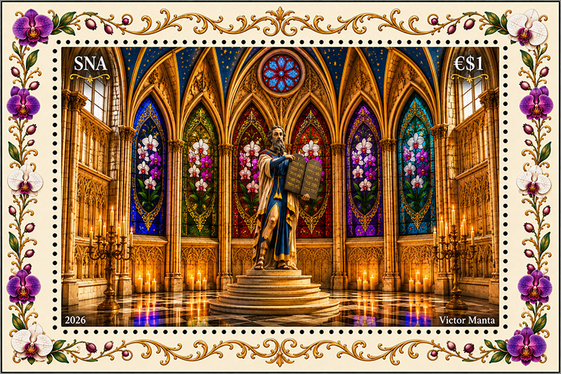

The most beautiful art stamps, after AI
- Mona Lisa (Leonardo da Vinci): This postage sheets focuses on the iconic portrait.


- Girl with a Pearl Earring (Johannes Vermeer): A beautiful, solo Netherlands stamp that isolates Vermeer’s masterwork, preserving the deep blues and glowing pearl details within the perforated border.

- The Kiss (Gustav Klimt): This single Austrian issue isolates the golden, intricate leaf patterns and symbolic mosaic textures of the famous Secessionist painting.

- The Great Wave off Kanagawa (Hokusai): An individual Japanese commemorative stamp that captures the crisp, engraved lines of the powerful ukiyo-e wave crest against Mt. Fuji.


- The Starry Night (Vincent van Gogh): A macro-focused commemorative single stamp highlighting the thick, swirling impasto brushstrokes of the midnight sky.

- The Switzerland 2000 Embroidery Stamp was officially issued in a miniature sheet of 4 stamps (often referred to by collectors as a block of 4).

Visual Characteristics of the Sheet
Intricate Border: The entire outer margin of the 4-stamp sheet features an embroidered, wavy lace pattern matching the design of the individual stamps.
Composition: It is arranged in a 2x2 grid, with each individual stamp displaying the denomination of "500" (representing 5.00 Swiss Francs) and the inscription "HELVETIA". Fabric Material: The background is an openwork mesh fabric made of polyester, heavily layered with dense, light-blue and white embroidery thread.
- My own design, for the imaginary Spanish North Africa country. A requiem for the now defunct major philatelic newsgroup news:rec.collecting.stamps.discuss (RCSD)

